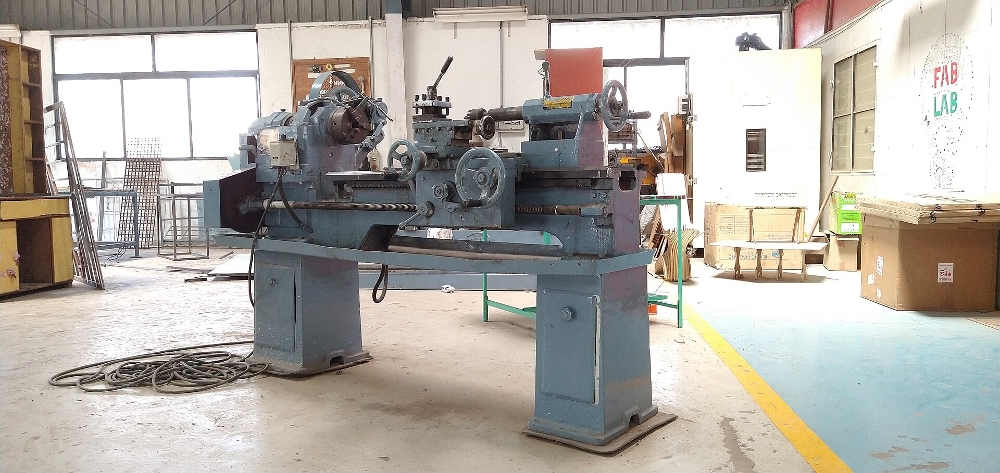
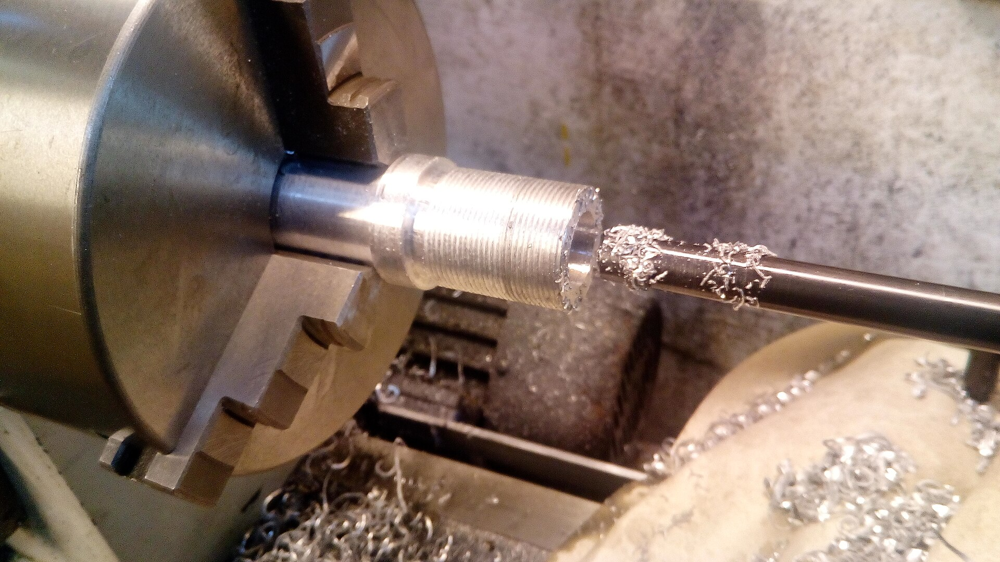

SPECIES 01 // ENTERPRISE COREB2B 深度定制
企业级 AI+ERP 智能中枢
Autonomous Enterprise Resource Planning
将多模态大模型直接嵌入采购、排产、仓储、财务全链路，让系统从被动记录死数据的账本，进化为主动预警风险、自主调度资源的企业硅基大脑。
交互范式
自然语言即指令
部署形态
本地私有化 / 混合云
定制深度
1:1 贴合非标产线
国家级科技型中小企业 · 2015 年起深耕生产管理与进销存系统研发
宁波依然网络科技旗下产业智能品牌，将前沿大语言模型深植于真实车间、供应链与超级个体的业务毛细血管。
Foundation & Credentials
2015 创立 · 国家级科技型中小企业
Engineering Heritage
10年+ 生产与进销存研发 · 多项软著
Dual Engines
企业 AI+ERP / 一人公司 AI 矩阵
Coordinates
LAT 29.8892°N · LON 121.5503°E · OPEN

Architectural Pillars // 战略双翼
不堆砌功能列表，我们从底层重塑“多部门协同企业”与“极致精简一人公司”的运转范式。
Autonomous Enterprise Resource Planning
将多模态大模型直接嵌入采购、排产、仓储、财务全链路，让系统从被动记录死数据的账本，进化为主动预警风险、自主调度资源的企业硅基大脑。
交互范式
自然语言即指令
部署形态
本地私有化 / 混合云
定制深度
1:1 贴合非标产线
One-Person Company Intelligence Matrix
为高认知独立创业者、主理人与垂直工作室编排 7×24 小时协同运转的 AI 获客增长官、全天候金牌销冠、自动化交付工程师与财务法务助理，让一个人活成一支高市值特种部队。
组织杠杆
1 人 = 10+ 专业岗位
知识资产
个人方法论数字克隆
运转边际成本
趋近于零
Evolution & Roadmap // 实业背书
自 2015 年创立宁波依然网络科技以来，我们用十年车间排产、进销存账本与政企系统集成功底，奠定了比纯算法初创团队更懂实体制造的工程壁垒。
Trusted by Industry & Institutes

Investor Relations & Ecosystem // 与远见者同行
IR & STRATEGIC PARTNERSHIP · 面向资本、渠道与算力生态的长期协作框架。
Capital Vision / 资本价值
传统 SaaS 与 ERP 的 AI 原生化重写窗口已开启，我们占据企业核心工作流入口与高粘性私有数据资产。
Channel Partner / 渠道与商协会共赢
依托已落地验证的商会/协会 AI 数字化服务底座，面向地方产业集群、行业商协会及软硬件集成商开放定制底座与高额分润。
Tech Alliance / 算力与模型生态
与主流开源/闭源基座大模型、国产算力一体机厂商深度耦合，共同打造“开箱即用、数据不出域”的软硬一体行业智算终端。
05. INITIATE TRANSMISSION // 加密直达
无论您是寻求企业 AI+ERP 破局的实业家、渴望武装自我的超级个体，还是关注产业智能化的投资机构，我们的创始与专家团队均静候您的垂询。
HOTLINE / WECHAT · 林经理专线
159-6841-4820微信同号 · 7×24 响应
HEADQUARTERS · 研发与实业交付中心
中国 · 宁波市江北区长三角实业交付中心 · 宁波 · 浙江
29.8892°N / 121.5503°E